终章 空之轨迹
终章没有BP获取，只需要一直走主线即可。
可以自由行动后调整一下人员和装备，注意节省晶片，接下来将在浮游都市获取各种五级回路，所以不必在这里合成四级回路了。餐厅里可以购买《利贝尔通讯第11号》和各类食材，还能买到料理“苦味菜肉蛋卷”，工房操作员也销售一些装备。建议出发时带上科洛丝，接下来有一段剧情要求她必须在场，而且科洛丝的魔法能力很强，一直带着可以省力不少。从埃尔赛尤底层出发，先进入的是公园区域卡尔玛丽。直接去正中央的升降梯上，前往西卡尔玛丽站，调查终端，选择“使用光环轨道”，将激活光环轨道，不过此时只有一个站，暂时不能用。回来继续选择“网络商城”，可以拿晶片换红耀珠和苍耀珠，今后每个终端都可以换取某几种耀珠，需要的同学请去对应的终端处换取。接着选择“解除门锁”，就可以打开方舟地下通道①的大门了 。
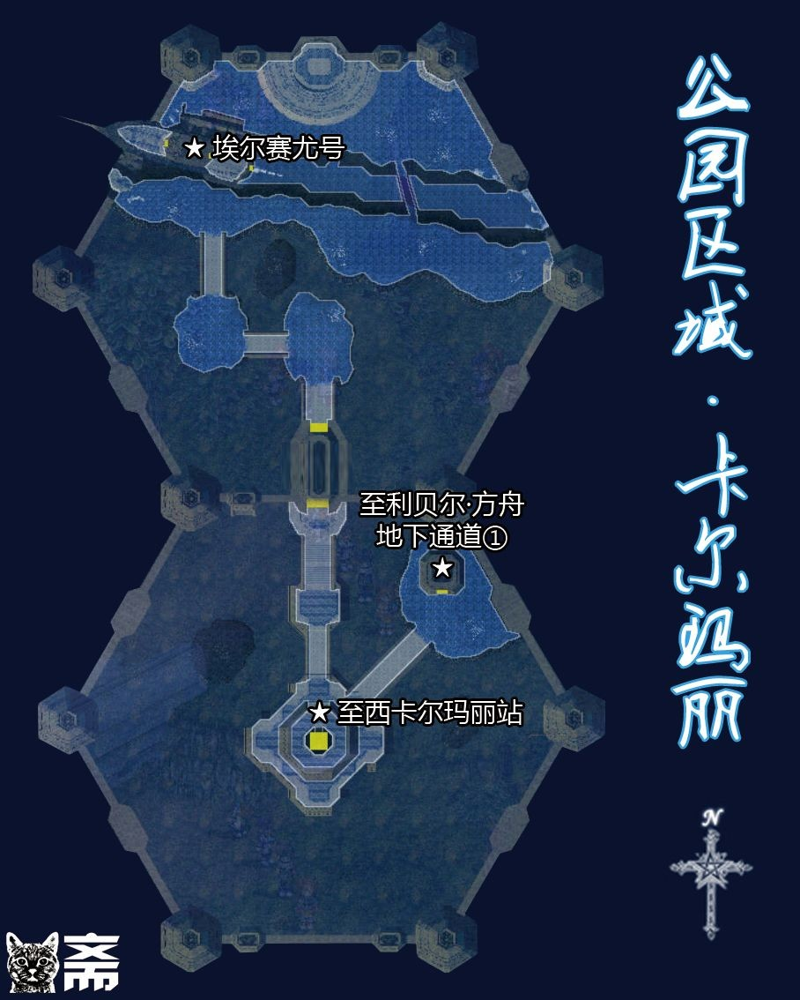
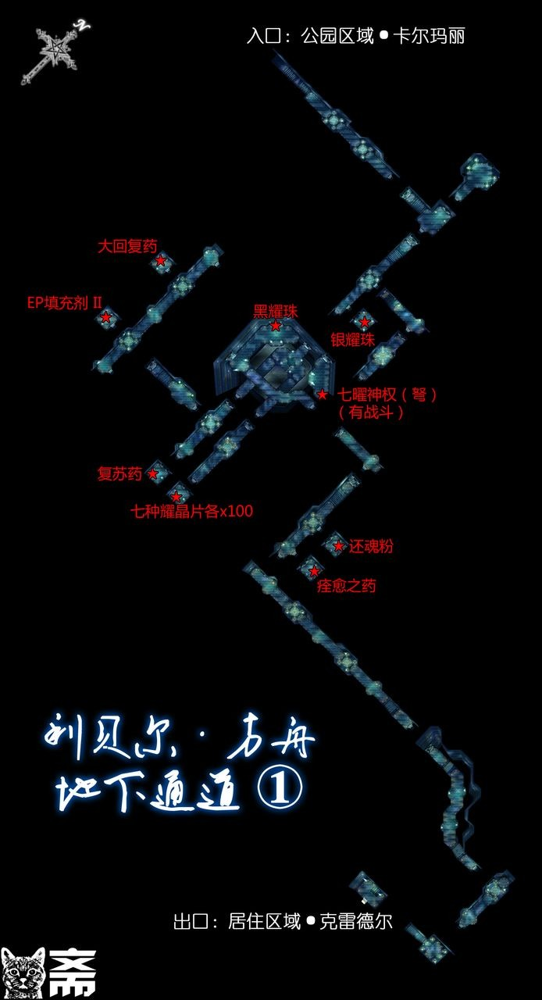
注意多转转，尽量收集齐宝箱物品，这里的物品都很高级。路上会得到重要的黑耀珠（行动力5），对于空轨来说这个是所有人必备的回路，这里会拿到一个，后面还要合成3个。出来之后就到了居住区域克雷德尔。
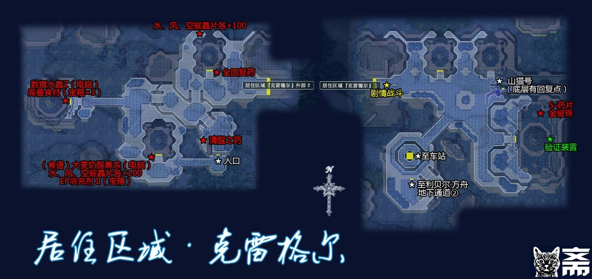
先把西半部分的宝箱收集完毕，注意图中的数据水晶Z和大麦奶酪果冻的食谱都需要调查电脑获得。
★如果是PSP版的话，获得数据水晶Z之后去调查大麦奶酪果冻的电脑，会得到第二块塞姆里亚石，这个是日文原版的设计，汉化版有BUG无法获取，需要的同学请下载日版。★
接着向东部走触发剧情战，战斗后乔斯特加入。在南边的房间调查电脑，此时队伍中必须有科洛丝，选择“福音的再发行申请”输入科洛丝·塞雷斯托·D·奥塞雷斯，就会获得“原福音”。这是继续前进必须使用的剧情道具，之后经过升降梯前往车站。
调查终端，发现光环轨道和网络商城都能正常使用（今后可以通过光环轨道方便地回到埃尔赛尤号上），但是解除门锁功能无法使用。接着在终端前使用原福音（使用方法跟第四章梦境中使用口琴一样）就能解开门锁了。
★不要着急去地下通道，先带着数据水晶Z和塞姆里亚石回到埃尔赛尤号上找拉赛尔博士对话，就可以用塞姆里亚石合成最终武器了★【PC版如果继承SC完美通关存档，此时有两个塞姆里亚石，直接合成小艾和小约的最终武器；PSP版可以制作八个人物的最终武器，喜欢哪个要哪个吧】
回到居住区域克雷德尔，通过下面的门进入方舟地下通道②。
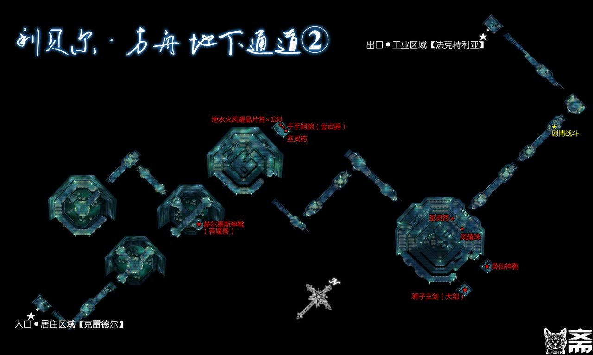
通过地下通道②就到了工业区域法克特里亚。
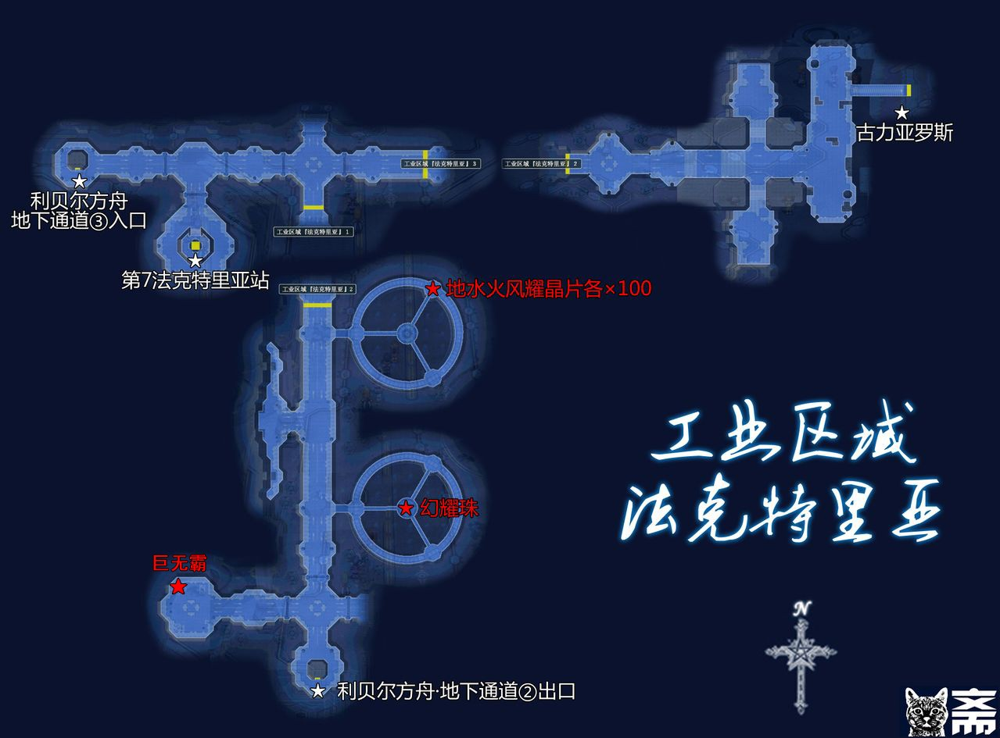
先把南部的宝箱收集完毕，经过升降梯前往车站。这个车站有销售比较重要的黑耀珠、金耀珠、银耀珠。选择“解开门锁”之后提示需要密码，看样子需要别的信息才能启动。此时队伍中如果没有带乔斯特，请经过光环轨道回一趟埃尔赛尤号把她带上，接下来进入古罗力亚斯必须带她。乔斯特的物理和魔法能力都很差，在队伍中可以主要用于回复、放墙。
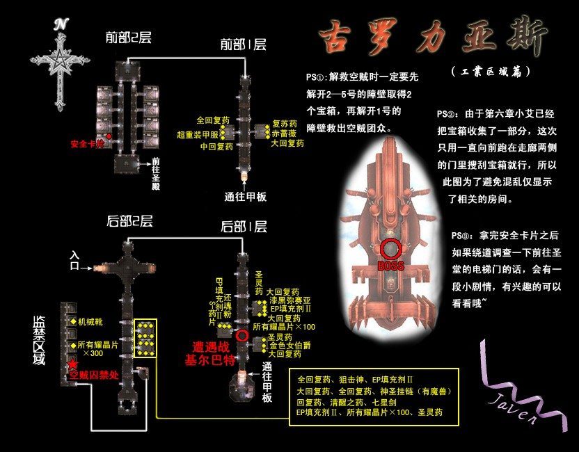
按地图走即可。别忘了拿宝箱里的各种高级装备。剧情战斗难度都不大。离开古罗力亚斯之后尽快把乔斯特换掉，先去一趟停留在居住区域克雷格尔的山猫号上与吉尔对话，会获得密码O.R.P.H.E.U.S，这就是第七法克特里亚车站终端的密码。在车站终端前使用原福音，输入密码O.R.P.H.E.U.S就可以解开方舟地下通道③的门锁了。
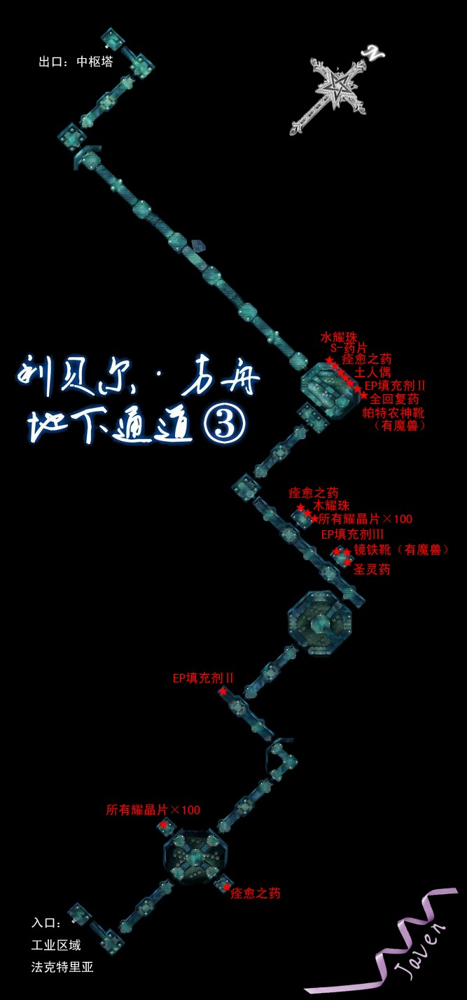
这里的章鱼形状怪物凯拉斯·格雷随机携带6只天使羊，这是最后的刷羊机会了。
通过地下通道③之后就到了中枢塔前，注意西边有一个目前无法进入的通道入口，游戏结束阶段要通过这里逃离。南边有一个车站，车站内卖最后几种耀珠，调整一下装备和回路就进入吧。
（特别的，对于PSP玩家，此时经过光环轨道回埃尔赛尤号上跟尤利娅、穆拉、科洛丝中的任意一名角色对话，可以选择让尤莉亚（Lv85）或穆拉（Lv86）加入队伍。尤利娅跟科洛丝、穆拉跟阿加特分别使用相同的武器。PSP汉化版存在漏洞，尤利亚和穆拉在中枢塔内的对话翻译不全，经常在大段的剧情中一言不发。进入中枢塔之前存一下档，PSP的部分版本存在BUG，这之后有可能发生一定概率的死机情况，多试几次应该能通过。）
中枢塔前有一场剧情战，战斗后进入中枢塔一层。中枢塔各层都要击败守护的执行者，四个执行者就是第七章那四个的加强版，战斗方法和注意事项也类似，这里不再赘述（注意怪盗和露西奥拉吃斗魂和时间减速，另两位都不吃）。每击败一名执行者之后调查前方的终端才能打开继续前进的通道和直接返回一层的传送阵。每一名执行者都有相关队员，带上相关队员会有特殊剧情。以下是对应的队员：布鲁布兰（科洛丝、奥利维尔）；瓦鲁特（不动金）；露茜奥拉（雪拉扎德）；玲（提妲）；剑帝莱维（很多人）
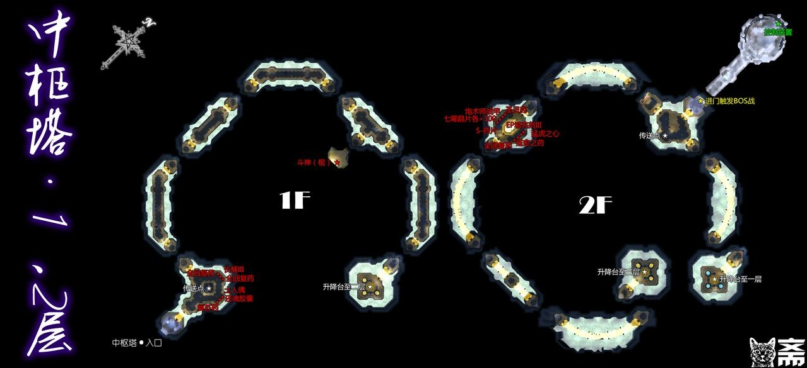

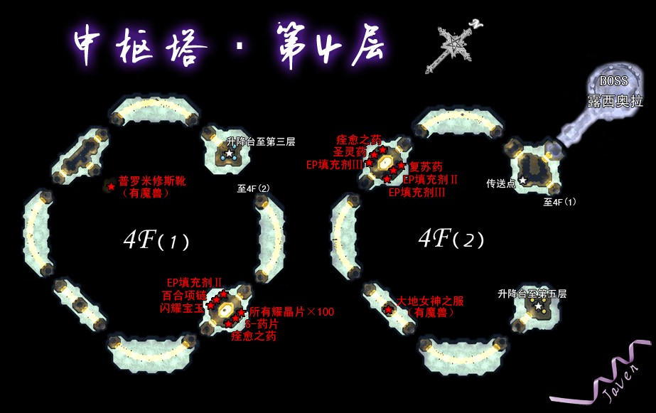
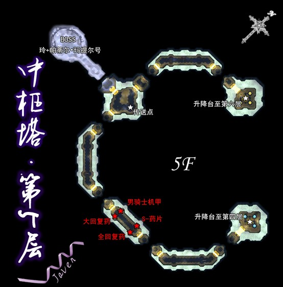
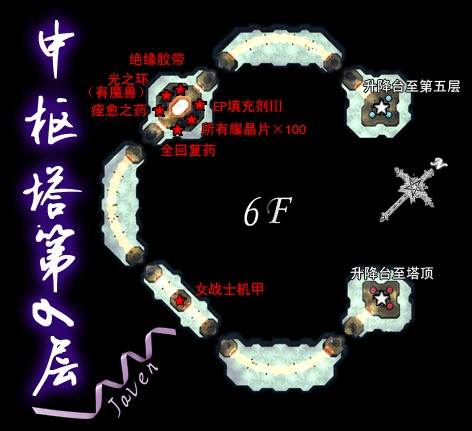
第六层终点有一个回复装置，这里之后不能换人、购买装备回路了，另外约修亚在前方战斗后将暂时离队，最终BOSS战时才会加入，所以请做好一切准备之后再前进。
第六层前方的对手是剑帝莱维，PC旧版此战难度不是很大，PSP版和PC三豪版难度有所增加，战斗失败后可以选择继续剧情。莱维不吃斗魂和时间减速。此战请注意回复，并用好时间加速改等魔法，如果感觉难度过大可以给小约使用回复100或200CP的还魂粉或还魂胶囊连续爆S技清场。战斗胜利后会得到斗魂腰带。
战斗后小约离队，剩下三名角色继续前进，打一场剧情战（这场剧情战的敌人幻想乐曲·德尔基昂吃斗魂和时间减速）之后来到根源区域·特梅理奥斯。这里有一个回复装置，最后的调整后继续前进发生最终BOSS三连战。第一战敌人会使用免疫一切魔法的“根源屏障”，之后很长时间我方无法使用魔法攻击；第二战开始时敌人处于无敌状态，任何攻击均无效，之后发生剧情，随后才能攻击。此后敌人会拆地板，拆掉地板上的我方人员将消失（一直到战斗结束才会回来，即使放墙也挡不住），所以一旦敌人驱动一个黑圈，在黑圈内的我方人员必须立刻离开。战斗后又是一段剧情，随后只有小艾小约可控，从中枢塔前西侧的通道逃离，这段没有任何岔路，记得存一个档以后用来看结局动画，终点出去之后就是游戏结局了。耐心点看完结局动画，会提示你保存通关存档的。
==================空之轨迹SC攻略OVER===============
{kind=link}
{kind=link}
{kind=link}
{kind=link}
{kind=link}
{kind=link}
{kind=link}
{kind=link}
{kind=link}
{kind=link}
{kind=link}